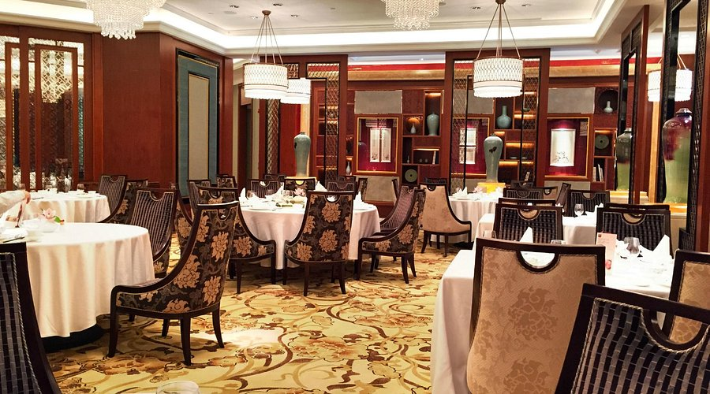
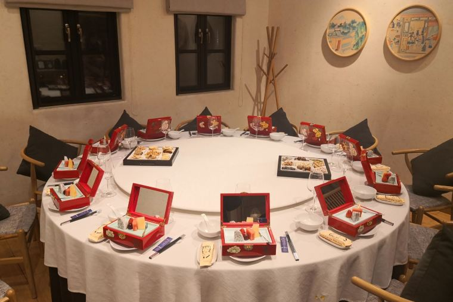

On the second floor of the Jinling Hotel in Nanjing's Gulou District is a restaurant named Plum Garden. Since 1983, Plum Garden has been known to be a Huaiyang-cuisine restaurant. Started by the MICHELIN Guide, the restaurant “has been serving Huaiyang classics to food-loving locals and tourists since 1983. The signature brine-poached duck is infused with the aromas of the aged marinade before being deboned and sliced.” The restaurant has many traditional favorites from Nanjing, such as salted duck and crab meat tofu that is prepared in a Huaiyang cuisine style.
Jiangnan Wok

Jiangnan Wok was opened in 2014 by Cheg Hou, who is a Huaiyang master. The MICHELIN Guide explains how “his home-style dishes cleverly incorporate influences from other regional cuisines—try his version of Buddha Jumps Over the Wall, which melds braised fish head in Huaiyang tradition and the abalone and sea cucumber cooked with scallion the Shandong way.” The location of the restaurant has a wide view of the Xuanwu Lake and Purple Mountain, as the menu reeves many classical Jiangsu cuisine.
Xunwei Jinling Shiercai (Lao East Gate Store)

This restaurant is a part of Nanjing's local dining scene explained by Trip “(c)reative cuisine inspired by ‘The Twelve Beauties of Jinling’ in Dream of the Red Chamber”. The restaurant embraces cultural heritage while serving high-quality Huaiyang dishes. Storytelling is contributed into the menus, making the experience for customers more memorable and enjoyable when they are able to connect with the atmosphere and food from the restaurant.